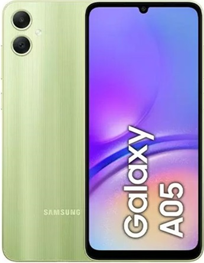
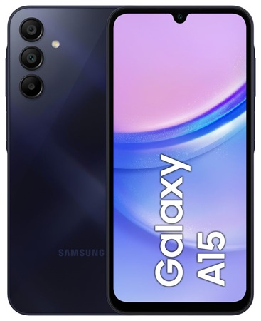
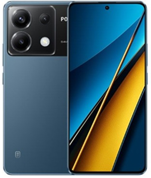
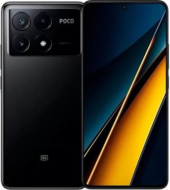
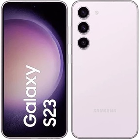
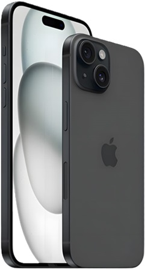
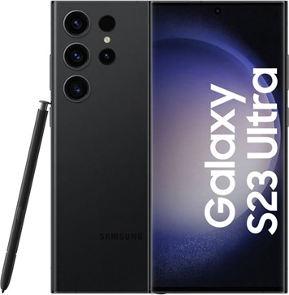

O Samsung Galaxy A05 é um smartphone Android completo, que não tem muito a invejar aos mais avançados dispositivos. Surpreendente é sua tela Touchscreen de 6.7 polegadas, que coloca esse Samsung no topo de sua categoria. A resolução também é alta: 1600x720 pixel. Quanto às funções, no Samsung Galaxy A05 realmente não falta nada. Começando pelo conectividade Wi-fi e GPS. A transferência de dados e navegação web sao fornecidas pela rede UMTS, mas não suporta tecnologias mais recentes, tais como HSDPA. Enfatizamos a boa memória interna de 128 GB com a possibilidade de expansão.
Este Samsung Galaxy A05 é um produto com poucos concorrentes em termos de multimídia graças à câmera de 50 megapixels que permite ao Samsung Galaxy A05 tirar fotos fantásticas com uma resolução de 8165x6124 pixels e gravar vídeos em alta definição (Full HD) com uma resolução de 1920x1080 pixels. Muito fino, 8.8 milímetros, o que torna o Samsung Galaxy A05 realmente interessante.

| Sistema Operacional | Android 14 |
| Processador | Helio G85 MediaTek |
| Tela | PLS LCD |
| 6.7" | 60 Hz |
| Memória Interna | 128GB |
| Memória RAM | 4GB |
| Bateria | 5000 mAh |
| Carregamento | 25 w |
O Samsung Galaxy A15 5G é um smartphone Android de bom nível, ótimo para fotos, que pode satisfazer até o mais exigente dos usuários. Tem uma enorme tela Touchscreen de 6.5 polegadas com uma resolução de 2340x1080 pixel. Sobre as características deste Samsung Galaxy A15 5G na verdade não falta nada. Começando pelo 5G que permite a transferência de dados e excelente navegação na internet, além de conectividade Wi-fi e GPS. Tem também leitor multimídia, videoconferência e bluetooth. Enfatizamos a boa memória interna de 128 GB com a possibilidade de expansão.
O Samsung Galaxy A15 5G é um produto com poucos concorrentes em termos de multimídia graças à câmera de 50 megapixels que permite ao Samsung Galaxy A15 5G tirar fotos fantásticas com uma resolução de 8165x6124 pixels e gravar vídeos em alta definição (Full HD) com uma resolução de 1920x1080 pixels. Muito fino, 8.4 milímetros, o que torna o Samsung Galaxy A15 5G realmente interessante.

| Sistema Operacional | Android 14 Samsung One UI 6 |
| Processador | Dimensity 6100+ MediaTek |
| Tela | Super Amoled |
| 6.5" | 90 Hz |
| Memória Interna | 128GB / 256GB |
| Memória RAM | 4GB / 8GB |
| Bateria | 5000 mAh |
| Carregamento | 25 w |
O Poco X6 é um smartphone Android avançado e abrangente em todos os pontos de vista com algumas características excelentes. Tem uma grande tela de 6.67 polegadas com uma resolução de 2712x1220 pixels. As funcionalidades oferecidas pelo Poco X6 são muitas e inovadoras. Começando pelo 5G que permite a transferência de dados e excelente navegação na internet. Enfatizamos a excelente memória interna de 256GB, mas sem a possibilidade de expansão.
O Poco X6 é um produto com poucos concorrentes em termos de multimídia graças à câmera de 64 megapixels que permite ao Poco X6 tirar fotos fantásticas com uma resolução de 9238x6928 pixels e gravar vídeos em 4K a espantosa resolução de 3840x2160 pixels. Muito fino, 8 milímetros, o que torna o Poco X6 realmente interessante.

| Sistema Operacional | Android 13 MIUI 14 |
| Processador | Snapdragon 7s Gen 2 Qualcomm |
| Tela | AMOLED |
| 6.67" | 120 Hz |
| Memória Interna | 256GB |
| Memória RAM | 8GB |
| Bateria | 5100 mAh |
| Carregamento | 67 w |
O Poco X6 Pro é um smartphone Android de bom nível, ótimo para fotos, que pode satisfazer até o mais exigente dos usuários. Tem uma enorme tela Touchscreen de 6.67 polegadas com uma resolução de 2712x1220 pixel. Sobre as características deste Poco X6 Pro na verdade não falta nada. Começando pelo 5G que permite a transferência de dados e excelente navegação na internet, além de conectividade Wi-fi e GPS. Tem também leitor multimídia, videoconferência e bluetooth. Enfatizamos a boa memória interna de 256 GB mas sem a possibilidade de expansão.
O Poco X6 Pro é um produto com poucos concorrentes em termos de multimídia graças à câmera de 64 megapixels que permite ao Poco X6 Pro tirar fotos fantásticas com uma resolução de 9238x6928 pixels e gravar vídeos em 4K a espantosa resolução de 3840x2160 pixels. Muito fino, 8.4 milímetros, o que torna o Poco X6 Pro realmente interessante.

| Sistema Operacional | Android 14 HyperOS |
| Processador | Dimensity 8300 Ultra MediaTek |
| Tela | AMOLED |
| 6.67" | 120 Hz |
| Memória Interna | 256GB / 512GB |
| Memória RAM | 8GB / 12GB |
| Bateria | 5000 mAh |
| Carregamento | 67 w |
O Samsung Galaxy S23 é, sem dúvida, um dos smartphones Android mais avançados e abrangentes disponíveis no mercado, graças ao seu rico equipamento e recursos multimídia avançados. Tem um grande display de 6.1 polegadas com uma resolução de 2340x1080 pixel. As funcionalidades oferecidas pelo Samsung Galaxy S23 são muitas e inovadoras. Começando pelo 5G que permite a transferência de dados e excelente navegação na internet. Enfatizamos a excelente memória interna de 256 GB mas sem a possibilidade de expansão.
O Samsung Galaxy S23 é um produto com poucos concorrentes em termos de multimídia graças à câmera de 50 megapixels que permite ao Samsung Galaxy S23 tirar fotos fantásticas com uma resolução de 8165x6124 pixels e gravar vídeos em 8K a espantosa resolução de 7680x4320 pixels. A espessura de 7.6mm torna o Samsung Galaxy S23 um dos telefones mais completos e finos.

| Sistema Operacional | Android 14 Samsung One UI 6 |
| Processador | Snapdragon 8 Gen 2 Qualcomm |
| Tela | Dynamic AMOLED 2X |
| 6.1" | 120 Hz |
| Memória Interna | 128 / 256GB / 512GB |
| Memória RAM | 8GB / 12GB |
| Bateria | 3900 mAh |
| Carregamento | 25 w |
O Apple iPhone 15 é um smartphone iOS com características inovadoras que o tornam uma excelente opção para qualquer tipo de utilização, representando um dos melhores dispositivos móveis já feitos. A tela de 6.1 polegadas coloca esse Apple no topo de sua categoria. A resolução também é alta: 2556x1179 pixel. As funcionalidades oferecidas pelo Apple iPhone 15 são muitas e todas top de linha. Começando pelo 5G que permite a transferência de dados e excelente navegação na internet, além de conectividade Wi-fi e GPS presente no aparelho. Tem também leitor multimídia, videoconferência, e bluetooth. Enfatizamos a excelente memória interna de 512 GB mas sem a possibilidade de expansão.
A excelência deste Apple iPhone 15 é completada por uma câmera de 48 megapixels que permite tirar fotos fantásticas com uma resolução de 8000x6000 pixels e gravar vídeos em 4K a espantosa resolução de 3840x2160 pixels. A espessura de apenas 7.8 milímetros torna o Apple iPhone 15 um dos telefones mais finos que existem.

| Sistema Operacional | iOS 18 |
| Processador | A16 Bionic Apple |
| Tela | Oled |
| 6.1" | 60 Hz |
| Memória Interna | 128GB / 256GB / 512GB |
| Memória RAM | 6GB |
| Bateria | 3349 mAh |
| Carregamento | 15 w |
O Samsung Galaxy S23 Ultra é, sem dúvida, um dos smartphones Android mais avançados e abrangentes disponíveis no mercado, graças ao seu rico equipamento e recursos multimídia avançados. Tem um grande display de 6.8 polegadas e uma resolução de 3088x1440 pixels que é uma das mais altas atualmente em circulação. As funcionalidades oferecidas pelo Samsung Galaxy S23 Ultra são muitas e todas inovadoras. Começando pelo 5G que permite a transferência de dados e excelente navegação na internet. Enfatizamos a excelente memória interna de 1000 GB mas sem a possibilidade de expansão.
A excelência deste Samsung Galaxy S23 Ultra é completada por uma câmera de 200 megapixels que permite ao Samsung Galaxy S23 Ultra tirar fotos fantásticas com uma resolução de 12000x9000 pixels e gravar vídeos em 8K a espantosa resolução de 7680x4320 pixels.

| Sistema Operacional | Android 14 Samsung One UI 6 |
| Processador | Snapdragon 8 Gen 2 Qualcomm |
| Tela | Dynamic AMOLED 2X |
| 6.8" | 120 Hz |
| Memória Interna | 256GB / 512GB / 1TB |
| Memória RAM | 12GB |
| Bateria | 5000 mAh |
| Carregamento | 45 w |